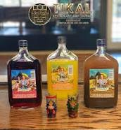

Quetzalteca
¡Quezalteca es Guatemala! sus colores, sus aromas y su gente.
La Quetzalteca no solo es una bebida alcohólica, sino que también se ha convertido en un símbolo cultural en Guatemala. La imagen del quetzal, el ave nacional de Guatemala, aparece en la etiqueta de la botella, lo que refuerza su identidad como una bebida guatemalteca.
La Quetzalteca es elaborada a partir de la destilación de caña de azúcar, lo que le confiere un alto contenido de alcohol
La Quetzalteca se destaca por su variedad de sabores frutales, que van desde piña, coco, fresa, sandía, mango, entre otros. Cada sabor tiene un color característico y un perfil de sabor único.
esta disponible por tan solo Q59.00
